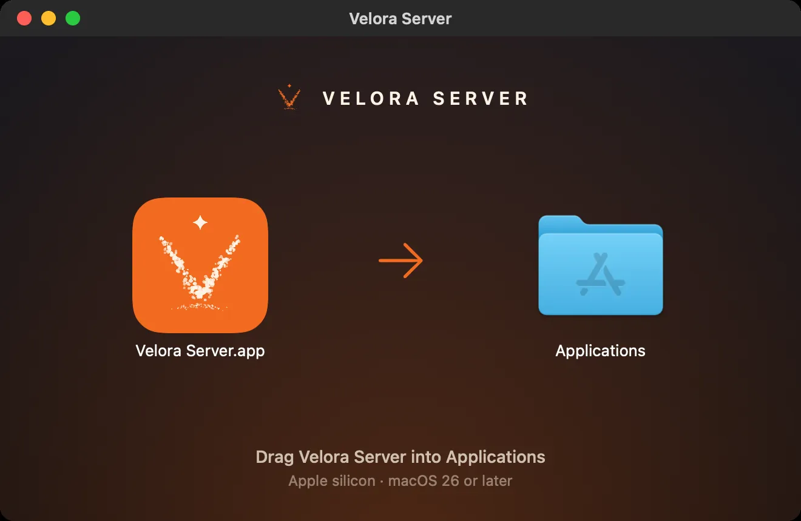

Velora Server for Mac
Version 2.6.23 · Apple silicon · macOS 26 or later · Notarized by Apple

1. Open the DMG
Double-click VeloraServer.dmg in your Downloads folder.
2. Drag to Applications
Drag Velora Server onto the Applications folder in the window.
3. Set it up
Open Velora Server. It walks you through the admin account and your media folders. Setup guide
Plex and Navidrome, movie versions, Private Photos
Plex, Navidrome and Jellyfin
Choose Other server, type the address, and the apps work out which server it is. Plex signs in on plex.tv. More
Movie versions and extras
Several files of one film become one movie with a version picker; disc menus are hidden and extras show on the movie's page. More
Private Photos
Photo folders become private libraries with a viewer, slideshows on Apple TV and editors for photos and videos.
Deep Research
Web research by the AI model you chose, written up as a report or turned into audio. More
Favorites
Star anything. Favorites sync per account and help recommendations.
Velora on your other devices
The apps for iPhone, iPad, Mac, Apple TV and Vision Pro are in TestFlight beta. A public TestFlight link will appear here; until then, ask for an invite through GitHub.
iPhone and iPad
iOS and iPadOS 18 or later.
Mac
macOS 15 or later. The app for watching, separate from the server.
Apple TV
tvOS 26 or later.
Apple Vision Pro
visionOS 2 or later.
CarPlay
Waiting for Apple's CarPlay approval.